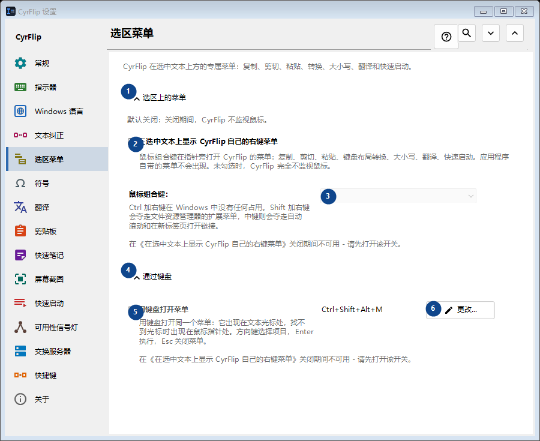
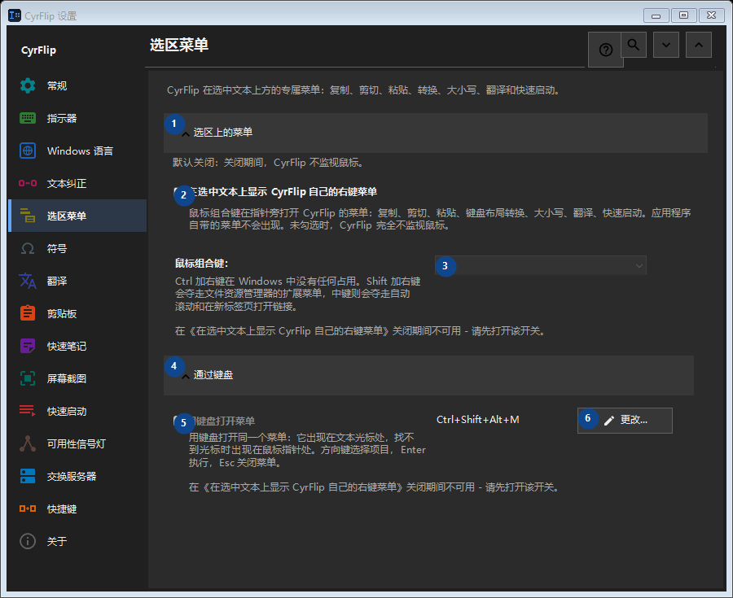

选区菜单
用途
CyrFlip 在选中文本上方的专属菜单：复制、剪切、粘贴、转换、大小写、翻译和快速启动。


使用顺序
设置立即生效，无须按固定顺序操作；请使用以下分组。
界面元素
1. 选区上的菜单
需要执行上述操作时使用此命令。接受前请阅读确认提示。
你的快捷键2. 在选中文本上显示 CyrFlip 自己的右键菜单
鼠标组合键在指针旁打开 CyrFlip 的菜单：复制、剪切、粘贴、键盘布局转换、大小写、翻译、快速启动。应用程序自带的菜单不会出现。未勾选时，CyrFlip 完全不监视鼠标。
你的快捷键3. 鼠标组合键：
在《在选中文本上显示 CyrFlip 自己的右键菜单》关闭期间不可用 - 请先打开该开关。 此控件当前不可用。请先启用相应功能或选择条目。
你的快捷键4. 通过键盘
需要执行上述操作时使用此命令。接受前请阅读确认提示。
你的快捷键5. 用键盘打开菜单
在《在选中文本上显示 CyrFlip 自己的右键菜单》关闭期间不可用 - 请先打开该开关。 此控件当前不可用。请先启用相应功能或选择条目。
你的快捷键6. 更改 - 用键盘打开菜单
需要执行上述操作时使用此命令。接受前请阅读确认提示。
你的快捷键